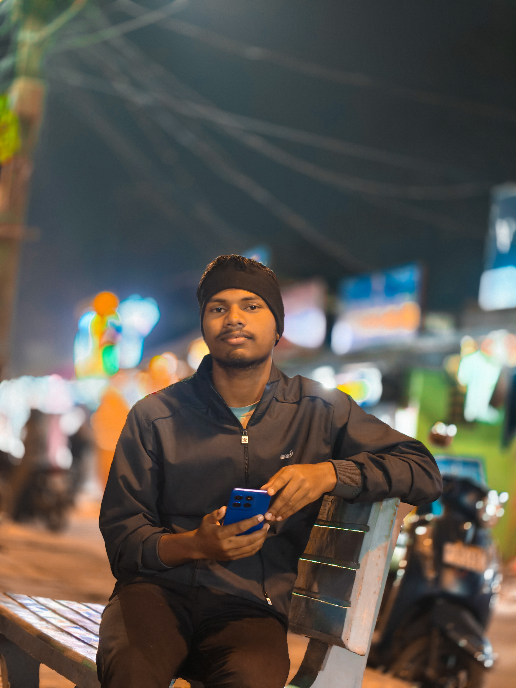

Student · Notes Hub creator
Hi, I’m Ashis Mahanta
B.Com (AEDP) Student
I’m a B.Com (AEDP) student at Government Autonomous College, Rourkela, affiliated with Sambalpur University. I’m interested in commerce, business management, accounting, human resources, and technology. Through this website, I aim to organize useful study resources and make learning easier for fellow students.
Education
B.Com (AEDP)
Areas of Interest
Topics I’m curious about and enjoy learning:
- Commerce
- Accounting
- Business management
- Human resource operations
- Technology
- Web development
- Digital learning
What I’m Building
The Student Notes Hub is a student-focused project for organizing and sharing useful academic notes. I hope it makes study resources easier to find and supports fellow students as they learn.
My Goals
Continue learning, develop practical digital skills, deepen my understanding of commerce, and contribute useful resources to the student community.